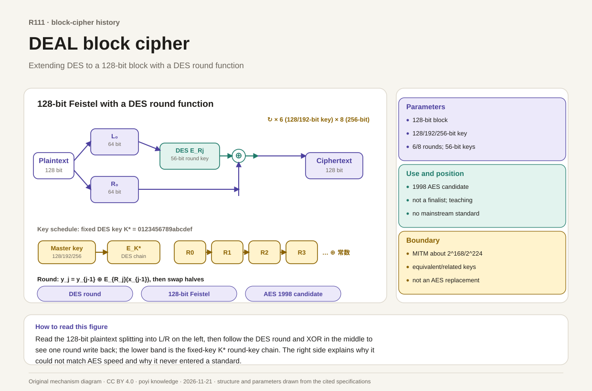
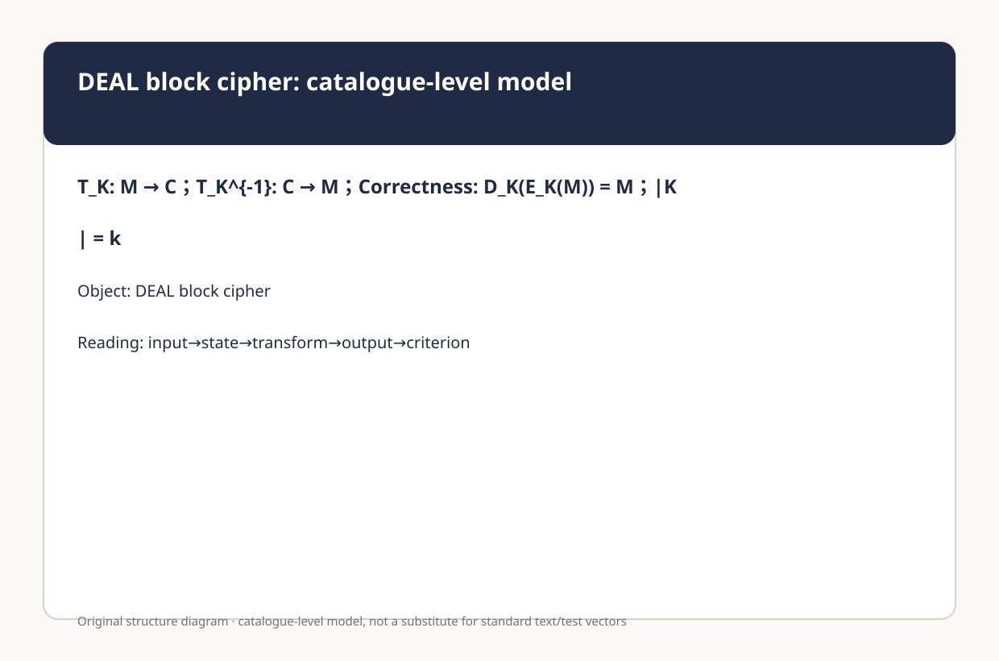

Principles
Algorithm: DEAL block cipher (DEAL 分组密码). ### 128-bit block, 64-bit halves
DEAL splits a 128-bit plaintext into two 64-bit halves and runs a balanced Feistel network. The round function is not a new S-box; it calls DES on one 64-bit half: y_j = y_{j-1} ⊕ E_{R_j}(x_{j-1}), then swaps halves for the next round. Each round key is nominally a 64-bit DES key but only 56 bits are used; the parity bits are ignored. ### Rounds and key schedule
DEAL-128 and DEAL-192 run 6 rounds; DEAL-256 runs 8. The key schedule uses a fixed DES key 0123456789abcdef and chains the 64-bit master-key blocks K0, K1, ... into R0 = E(K0), R_i = E(K_i ⊕ R_{i-1} ⊕ constant). Decryption uses the same round keys in reverse order.

Why it matters
DES still had a large installed hardware base and years of analysis in the 1990s. DEAL aimed to keep that base while doubling the 64-bit block to 128 bits, avoiding matching-ciphertext attacks; a 128-bit block gives a 2^64 birthday bound. Its round function calls DES directly, which the designer treated as more conservative than building a new S-box.
DEAL's speed was close to Triple DES, far slower than candidates optimized for the AES competition. NIST wanted high throughput, low latency and broad-platform implementations; DEAL's “reuse old hardware” became a performance burden. The later Kelsey–Schneier and Lucks analyses also exposed weaknesses in the key schedule and round margin.
Applications
Richard Outerbridge submitted DEAL to the AES competition in 1998; it did not reach the five finalists. Today it is better used as a teaching example of “build a larger block from an existing block cipher” than as a production algorithm.
No mainstream standard adopted DEAL; modern storage and protocols use AES-XTS or AES-GCM. DEAL's kinship with Ladder-DES keeps it relevant in Feistel-construction and security-proof literature, but engineering selections do not treat it as an AES replacement.

Limits & attacks
Lucks presented a certificational attack on DEAL-192 at FSE 1999: using the separability of the six-round Feistel round keys, a large number of chosen ciphertexts significantly narrows the key search space. The paper also notes meet-in-the-middle bounds of about 2^168 for six rounds and 2^224 for eight, showing the effective key length is below the nominal value. The attack needs an enormous number of chosen ciphertexts, so it is a “design is not sound enough” result rather than a practical break.
Kelsey–Schneier found structural problems in the key schedule at SAC 1999: DEAL-128 has equivalent-key pairs, finding one costs about 2^64 DES operations; DEAL-192/256 need only 6 or 8 DES operations to construct 256 equivalent keys. They also gave a related-key attack with about 2^33 related keys and 3 plaintexts per key. The root cause is that round keys are generated by a DES chain under a fixed key while parity bits are ignored.
DEAL provides only a 128-bit block permutation; CBC, CTR, IV/nonce rules and authentication are separate choices. Six or eight rounds leave a thin margin against modern analysis, so it is not an AES replacement.
History
Lars Knudsen proposed DEAL at SAC 1997; Richard Outerbridge submitted it to the AES competition in 1998. DEAL stands for “Data Encryption Algorithm with Larger blocks”, literally “a larger-block version of DES”.
DEAL did not reach the AES final and never became an ISO or NIST standard. Its life is mainly in AES analysis papers, Feistel teaching designs and reflections on the “reuse DES” route; after AES was chosen in 2000, DEAL left the engineering scene.
Worked example & verification
Formal model and reproduction steps
[C=E_K(P;r),\qquad P=D_K(C)]
DEAL block cipher: the registered public parameters, key material or randomness, and message are mapped through the stated transformation to an output checked against the registered criterion. The worked example is a structural reproduction, not a new test vector; parameter ranges, standard versions and implementation details remain source-bound.
References
- Wikipedia search entry for DEAL 分组密码. https://zh.wikipedia.org/w/index.php?search=DEAL%20%E5%88%86%E7%BB%84%E5%AF%86%E7%A0%81
- Handbook of Applied Cryptography (Menezes, van Oorschot, Vanstone). https://www.cacr.math.uwaterloo.ca/hac/